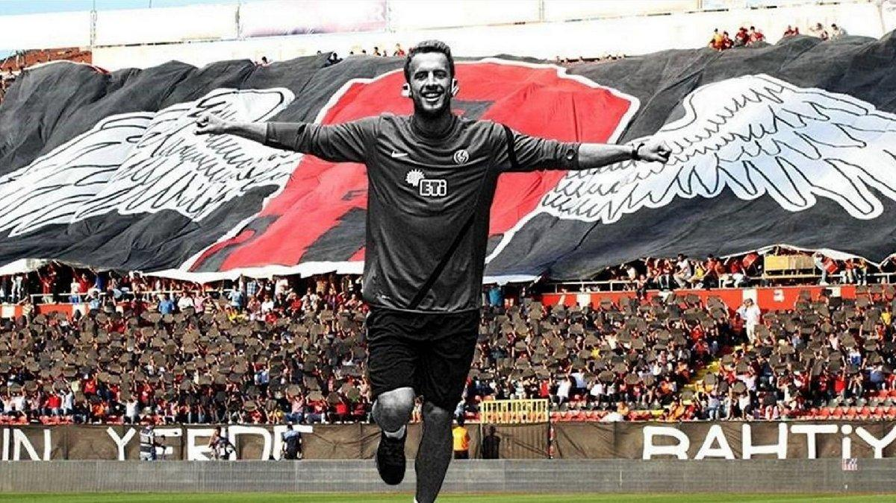

1965 yılında kurulduğu yıl birinci türkiye ligine çıkma başarısı gösteren eskişehirspor,lige çıkar çıkmaz birinci türkiye liginde aldığı başarılı sonuçlarla da ülkemizi yurt dışında temsil etme hakkı kazanıp,üstüne üstlük birde ispanyol takımını eleyen ilk türk takımı olarak da türk futbol tarihine adını altın harflerle yazdırıverince ve tüm bunlarla birlikte ligin üst sıralarına ipotek koyup kupaları toplamaya başlayınca istanbul basını işte o zaman eses'i(eskişehirspor'u) kırmızı şimşekler diye nitelemeye başladı.işte bu isim şimşek gibi gelen başarılar sonucu hakedilmiş bir isimdir.ama daha sonraları kötü giden bir sezon sonunda Beşiktaş ile oynadığı şaibeli bir maç sonrasında eskişehirspor maç tatil edilip hükmen yenik sayılarak küme düşünce.eses'in kırmızı şimşek lakabı leş yiyiciler gibi bazı takım taraftarlarınca alınmak,kullanılmak istenmiştir ama istanbul basını bile eses'den başka hiçbir takıma bu zamana kadar "kırmızı şimşekler"dememiştir.çünkü yalnızca "bir"adet kırmızı şimşek vardır.o da "es es"dir,Eskişehirspordur.
Basarısıyla Tüm anadolu takımlarına onderlik eden , anadolu takımlarında kırmızı- siyahlı renklerin bu kadar yaygın olmasına neden olan, kırmızı simsekler diye anılan ( gerci bu lakap genclerbirligi samsun ve benzeri sonradan basarıya ulasan takımlar tarafından calıntı bı sekilde kullanılıyor) , en basarılı anadolu takımlarından bırıdır lig ikincilikleri, son bes dakikada yenilen gollerle kaybedilen sampıyonluklar, avrupadaki basarılı sonuclar, tum turkiyeye tezahurat yapmayı ogreten amigo orhan ve dunyanın en ilginc seyircisine sahip takımdı yedi sekiz yıl once ikinci hatta ucuncu ligdeyken bile 10 saat onceden tribunlerin doldugunu hatırlarım, taraftar hic susmaz, vefakardır.